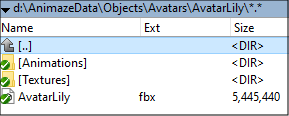
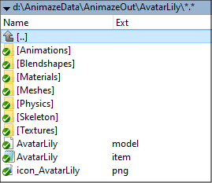
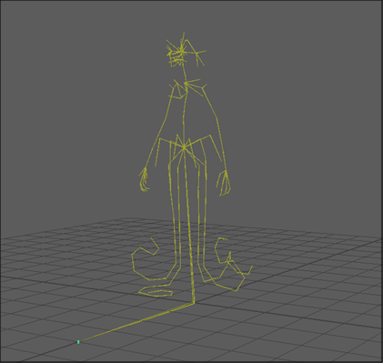
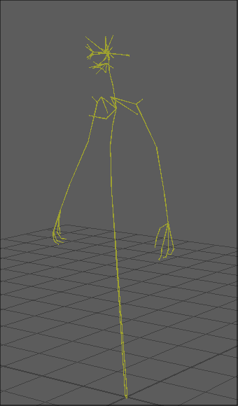
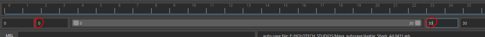
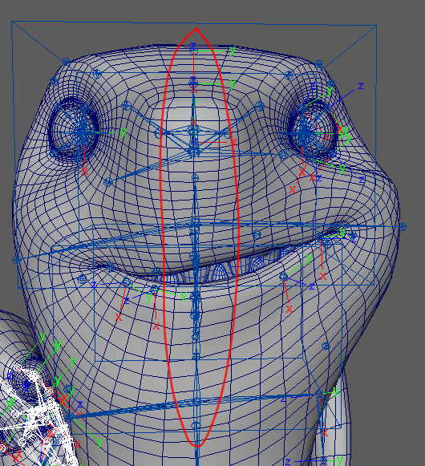
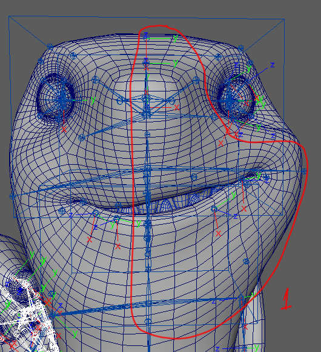
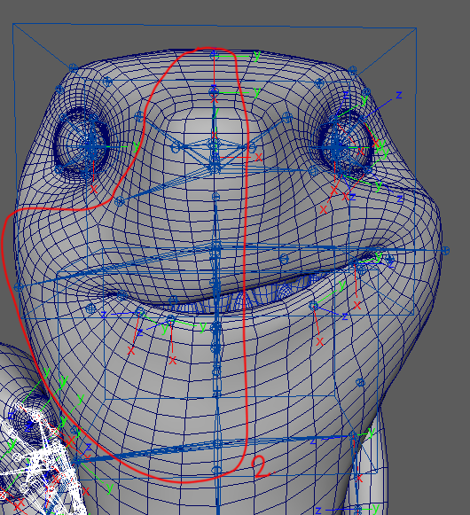

Animations
Animations should be exported in .fbx format, in the \Animations folder of the avatar.
As a rule, the geometry must be exported together with the skeleton in the geometry *.fbx file of the model, placed outside of the Textures and Animations folders (AvatarLily.fbx in the example below). In all the other animations, the geometry is not needed.

If the model contains Blendshapes, then they must be exported in the geometry *.fbx file, as well. So, when importing your model in Animaze Editor, if they have been named according to our Animation Appendix, the system will create a Blendshape folder for them, as below.

All base animation must be exported with animation keys on ALL bones. The base animations that we use are:
- idle1- is the base animation in which the avatar has micro movements and breathes, the arms are near the body
- idlePose - this is the first frame key from idle1 animation. All other animations are built starting from this pose.
-
MouthOpen - starts from idle pose animation. The last frame of this animation is the base for all other mouth open animations.
-
MouthOpen_TongueOut
-
MouthClosed_TongueOut
-
Tpose - animation used in full-body tracking
Mind that all the base animations must be exported with the whole skeleton (pic below, avatarLily’s skeleton), while all the other animations must be exported only with the bones that are moving (have animation keys).

When you are creating the animations, try to exaggerate expressions, because tracking will never do 100% of the animation. All the animations must be export selected, linear animations (a nonlinear animation - meaning that the animation is playing in different paces when enabled - could interfere with the tracking and cause issues).
Before exporting the animation, you should reduce the middle bones to 50%, else they will double transform in AnimazeEditor for each side of the animation, left & right.
There are 2 ways to animate the character:
-
Pure-joint based animations – all animations use the skeleton bones
-
A combination of joint-based animations with blendshapes animations
1 Skeletal Animation (all joint based)
This technique is represented in two parts: a surface representation used to draw the character (called skin or mesh) and a hierarchical set of interconnected bones (called the skeleton or rig) used to animate (pose and keyframe) the mesh.
Each bone has a three-dimensional transformation from the default bind pose (which includes its position, scale and orientation), and an optional parent bone. The bones therefore form a hierarchy. The full transform of a child node is the product of its parent transform and its own transform.
Animaze uses what we call animation atomics retargeting method, which implies that all required animations need to modify or animate a specific (typically small) part of the avatar. All the tracked movement (from a facial tracker) is split into very simple motions, which are called atomics. Each atomic is driven separately and combined (in many cases additively) to build a complex expression.
For instance, if you are making the frown animation for the left eyebrow, named LeftEyebrow_D, then the only bones moving in that animation should be the middle and inner bones of the left eyebrow, all the rest should have the same exact transformation of their base animation, which is idle1. Any offset in the additive animations brings a pose offset in Animaze. For example, if an eyebrow animation brings an offset to the neck, every time the avatar will move that eyebrow, it will also transform the neck.
First animation to be created should be idle1. From this animation, extract the first frame and export it in a *.fbx file together with the skeleton containing keys on every bone - this is now the idlePose. From this position on, create all the other animations, for example:
>> from idlePose position create the Avatar_F animation. In this animation the avatar bends forward, so only the bones that bend the avatar must contain animation keys. Just these bones must be exported in this .fbx animation (”export selected” function in Maya).

>> another example is MouthOpen animation and the ones that emerge from it (MouthOpen_PursedLips etc). Likewise, the first frame in this animation is idlePose, while in the last frame (end of the animation), the avatar will open its mouth. As stated, being a base animation, it will have to be exported with the whole skeleton.
Basically, all additive animations have as base animation idle1 animation, or to be precise, they take reference the last percentage of that animation (idlePose).
There are some exceptions to this rule:
-
Animation for tongue while the tongue is sticking out. These are based on MouthOpen_TongueOut, which is also added on idle1 animation. These animations are: MouthOpen_TongueOut_LR and MouthOpen_TongueOut_UD.
-
Animation for tongue while only the tip of the tongue is out: MouthClosed_TongueOut which is also added on idle1 animation. These animations are: MouthClosedTongueOut_LR, MouthClosed_TongueOut_UD.
Animaze supports some procedural animations that need reference bones in the skeleton. One of these animations is the “look-at-” function, that makes the avatar gaze into the camera.
This feature relies on the transformation of the BipHead bone, needed in the skeletal hierarchy. It’s used to guide the axis and it will only be exported to basic geometry and animation idle1.
Procedural animation techniques and actions are also used to substitute for lack or poor tracking of certain features and user movements:
-
Crossed eyes correction
-
Lazy eye correction
-
Look at camera behavior
-
Orientate head to camera behavior
-
Auto blinking behavior
-
Avatar idle animation (we animate certain parts of certain avatars regardless of tracking input to make them feel more alive, like how Fluffo’s ears occasionally twitch)
-
Natural pupil behavior (small micro movements undetectable by current tracking technologies)
-
Triggerable special animations (puffed cheeks, tongue & other custom animations e.g. fist bumps, waves, dances can be created and tied to key-presses)
2 Joint-based animations combined with blendshape animations
There are two use cases for this type of animations:
2.1. Skeletal with corrective blendshape - The animation is skeletal, while the blendshape is a completion for more details or a correction for undesired deformations, for example when the avatar lifts the arm and the geometry isn’t behaving as you’d want to.
2.2. Skeletal with blendshape animation - Keep a base rig for general movements (head, jaw, body movements), while the transformations are blendshape based only (smile, eyebrow up animations).
Check the Animaze animation appendix, it contains name conventions of skeletal animations, blendshape animations & visemes.
The base animations (idle1, MouthOpen_TongueOut etc) can be created skeletal, while the body, head, eyes and the rest can be built with blendshapes (but it’s easier to keep it skeletal).
Animaze doesn’t support inbetween blendshapes, but it supports skeletal animations with corrective blendshapes.
You can build the animations on a single mesh. When importing the avatar in Animaze Editor, a blendshape that contains more than one material will be split into two separate materials.
Blendshapes are being imported bringing their positions, their normals and their tangent space.
The equivalent of idle1 animation for blendshape is NaturalPose. Over the natural pose you can start and build your morph targets, smile, mouth open etc.
All additive blendshapes have as base NaturalPose blendshape, and the open/closed mouth blendshapes will be built as follows:
-
these blendshapes are being built over NaturalPose & MouthOpen combined: MouthOpenLeft_U, MouthOpenRight_U, MouthOpenLeft_D, MouthOpenRight_D, MouthOpen_pursedLips_L, MouthOpen_pursedLips_Mid, MouthOpen_pursedLips_R, MouthOpenLeft_teethCovered_U, MouthOpenRight_teethCovered_U.
-
these are being built over NaturalPose & MouthOpen_TongueOut combined: MouthOpen_TongueOut_L, MouthOpen_TongueOut_R, MouthOpen_TongueOut_U, MouthOpen_TongueOut_D.
-
these are being built over NaturalPose & MouthClosed_TongueOut combined: MouthClosed_TongueOut_L, MouthClosed_TongueOut_R, MouthClosed_TongueOut_U, MouthClosed_TongueOut_D.
The equivalent of idle1 animation for blendshape is NaturalPose. Over the natural pose you can start and build your morph targets, smile, mouth open etc.
Here will be applied the same rules as the skeletal animation with base animations and additive animations, for example:
-
you will build mouth closed smile over the NaturalPose
-
you will start to build over the MouthOpen - morph target MouthOpenLeft/Right_U or mouth open smile (basically you start to sculpt your blendshape over the mouth open bs, which is added over the natural pose).

As stated before, before exporting the smile animation, you should reduce middle bones to 50%, else the middle bones will double transform in AnimazeEditor for each side of the animation, left & right. See pic below:

To do this follow these steps:
-
add keys at frame 15
-
delete at frame 30
-
move animation keys from 15 to 30.
And now we are ready to export the animation. Select the bones that are used to create the smile on the left side including middle bones and export it using the names from the Documentation, in this case is: MouthClosedLeft_U.fbx.
After that you will select the right side with middle bones and do the same thing.
 
The flow to create the open mouth smiling animations is:
- start in idlePose
- create MouthOpen animation
- take the pose from last frame of MouthOpen animation (meaning idle1+MouthOpen)
- from this frame create MouthOpenLeft_U, MouthOpenLeft_D, MouthOpen_pursedLips_Mid, MouthOpenLeft_teethCovered_U etc.
After you finish creating the blendshapes or animations, try to import 2 or 3 over each other to see how they will look combined in animaze app (for blendshapes, just activate more bs in the same time).
Below is a basic list of animations that combined result in 6 emotions. Use them as a guide and mind that they can be attained using other combinations as well:
Happy
-
MouthOpenLeft/Right_U
-
Left/RightEyeSquint
-
Mouth_unveilledTeeth_U
Surprise
-
MouthOpen
-
MouthOpen_pursedLips_Mid
-
Left/RightEyeWideOpen
-
Left/RightBrowUp
Angry
-
MouthOpen (partial)
-
MouthOpenLeft/Right_D
-
Left/RightBrowDown
-
Nose_U
-
Mouth_unveilledTeeth_U
-
Left/RightEyeClosed (partial)
Sad
-
Left/RightBrowSqueezeIn
-
MouthClosedLeft/Right_D
-
Nose_D (partial)
Disgust
-
Left/RightBrowDown
-
Mouth_unveilledTeeth_D
Scared
-
MouthOpen
-
Left/RightEyeWideOpen
-
Left/RightBrowSqueezeIn
-
Nose_D
Import your 3D avatar in Animaze Editor
After finishing all the process above, import your avatar in Animaze Editor for debugging purposes, fine tuning and later upload it on Storefront, if you want to. Here is the link with the process flow for this import step.